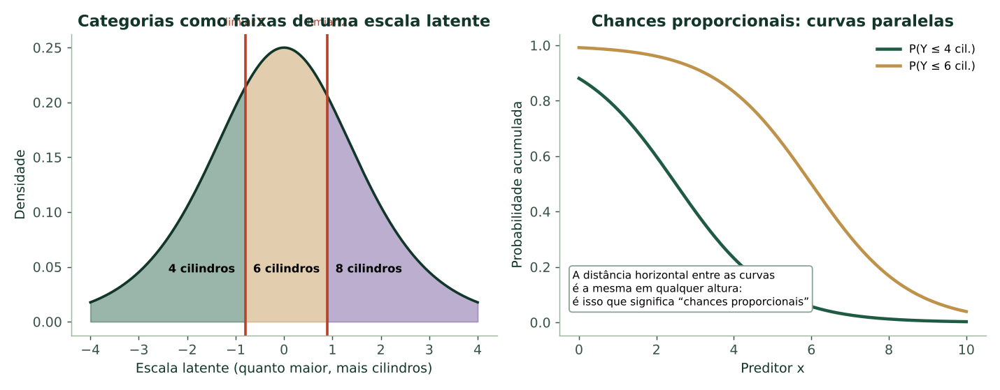
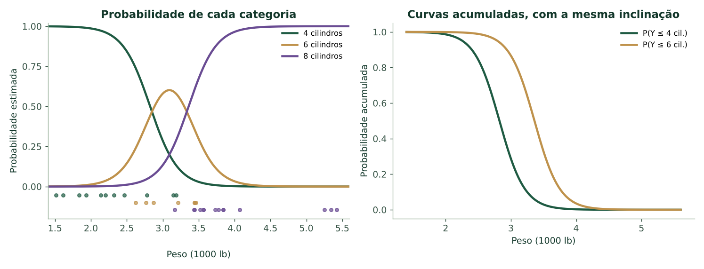

Regressão logística ordinal
Estima as probabilidades de categorias ordenadas usando a ordem da resposta, com um único coeficiente por preditor.
Comece por aqui
Ruim, regular, bom. Leve, moderado, grave. Discordo, neutro, concordo. Essas categorias têm ordem, mas a distância entre elas não é conhecida. Tratá-las como números inventa uma escala; tratá-las como rótulos sem ordem joga informação fora. A logística ordinal usa a ordem sem supor distâncias, e resume o efeito de cada preditor em um único coeficiente.
O modelo mais usado chama-se chances proporcionais (proportional odds), proposto por McCullagh (1980). O nome vem da sua principal restrição: o efeito do preditor é o mesmo em todos os pontos de corte da escala.
O que é o modelo
Em vez de modelar a probabilidade de cada categoria isoladamente, o modelo trabalha com probabilidades acumuladas: \(P(Y\leq k)\). Para cada um dos \(K-1\) cortes possíveis ajusta-se um logit, e todos compartilham a mesma inclinação:
Cada corte tem seu próprio intercepto \(\zeta_k\) (que posiciona a fronteira entre categorias), mas o \(\beta\) é único. Uma forma equivalente de ver o modelo: existe uma variável contínua latente \(Y^*=\beta_1x_1+\cdots+\beta_px_p+\varepsilon\), e a categoria observada é a faixa em que \(Y^*\) cai.

Na parametrização do R (MASS::polr) o preditor entra com sinal negativo na equação acumulada. A consequência prática é direta: um coeficiente positivo indica que o aumento do preditor empurra a resposta para as categorias mais altas. Outros programas usam a convenção oposta, então vale conferir a documentação.
Pressupostos e como verificá-los
| Pressuposto | Por que importa | Como verificar |
|---|---|---|
| Resposta com categorias ordenadas | É a informação que o modelo aproveita. | A ordem precisa fazer sentido no problema. |
| Observações independentes | Condição dos erros-padrão. | Delineamento do estudo. |
| Chances proporcionais | Um único coeficiente só descreve todos os cortes se o efeito for o mesmo em todos eles. | Compare as inclinações de logísticas binárias ajustadas em cada corte; teste de Brant (pacote brant) ou razão de verossimilhanças contra o modelo multinomial. |
| Linearidade no logit para preditores quantitativos | Mesma exigência da logística binária. | Termos quadráticos, splines, gráficos por faixas. |
| Casos suficientes em cada categoria | Categorias muito raras tornam o limiar impreciso. | table(y). |
Hipóteses e estatística de teste
Em que:
- \(K\)
- número de categorias ordenadas
- \(\zeta_k\)
- limiar (intercepto) do k-ésimo corte; sempre \(\zeta_1<\zeta_2<\cdots\)
- \(\beta_j\)
- coeficiente do preditor \(x_j\), comum a todos os cortes
- \(OR_j\)
- razão de chances de estar em uma categoria mais alta, por unidade de \(x_j\)
- \(G\)
- estatística da razão de verossimilhanças, com \(p\) graus de liberdade
- \(\ell\)
- log-verossimilhança
Exemplo numérico, passo a passo
No exemplo desta ficha, \(b=5{,}186\) (peso, em 1000 lb) e os limiares são \(\zeta_1=14{,}648\) (4 contra 6 ou 8 cilindros) e \(\zeta_2=17{,}429\) (4 ou 6 contra 8 cilindros).
\[\begin{aligned}P(Y &\leq 4\text{ cil.}) \\ &= 1/\bigl(1 \\ &\quad +e^{-(14{,}648-5{,}186\times3)}\bigr) \\ &= 1/(1+e^{-0{,}910}) = 0{,}287.\end{aligned}\]
\[\begin{aligned}P(Y &\leq 6\text{ cil.}) \\ &= 1/\left(1+e^{-(17{,}429-15{,}558)}\right) \\ &= 1/(1+e^{-1{,}871}) = 0{,}867.\end{aligned}\]
Logo: \(P(4)=0{,}287\); \(P(6)=0{,}867-0{,}287=0{,}580\); \(P(8)=1-0{,}867=0{,}133\).
Razão de chances: \(e^{5{,}186}=178{,}7\) por 1000 lb, ou \(e^{0{,}5\times5{,}186}=13{,}4\) por 500 lb.
Propriedades
- O modelo estima \(p+K-1\) parâmetros, contra \(p(K-1)+(K-1)\) da multinomial: é mais econômico.
- As probabilidades acumuladas são crescentes por construção, e as categorias nunca recebem probabilidade negativa.
- A razão de chances vale para qualquer corte da escala: é esse o conteúdo da hipótese de chances proporcionais.
- Inverter a ordem das categorias apenas troca o sinal do coeficiente.
- Com duas categorias, o modelo se reduz à logística binária.
- Outras ligações (probit, log-log complementar) são possíveis e mudam a interpretação dos coeficientes.
Como interpretar os resultados
| Elemento | O que informa | Cuidado |
|---|---|---|
| Coeficiente b | Deslocamento na escala latente por unidade do preditor. | Na parametrização do R, positivo = categorias mais altas. |
| exp(b) | Razão de chances de estar acima de qualquer corte. | Vale para todos os cortes apenas se a hipótese se sustentar. |
| Limiares ζ | Posição das fronteiras entre categorias. | Raramente têm interpretação própria. |
| Probabilidades previstas | A leitura mais informativa. | Apresente-as em valores relevantes do preditor. |
| Comparação entre cortes | Diagnóstico das chances proporcionais. | Inclinações muito diferentes pedem outro modelo. |
Reporte o coeficiente com intervalo de confiança, a razão de chances, os limiares, o teste global e uma avaliação da hipótese de chances proporcionais.
Como executar no R e em Python
Onde executar o código em Python
Não é preciso instalar nada: o Google Colab é um computador na nuvem, gratuito, que executa Python pelo navegador e já traz as bibliotecas usadas aqui (numpy, scipy e matplotlib).
polr() pertence ao pacote MASS, que acompanha a instalação padrão do R: basta library(MASS). A resposta precisa ser um fator ordenado (factor(..., ordered = TRUE)). Use Hess = TRUE para que o summary() apresente os erros-padrão. Alternativas: ordinal::clm(), mais completa, e rms::orm().
library(MASS)
dados <- transform(mtcars, cilindros = factor(cyl, levels = c(4, 6, 8), ordered = TRUE))
modelo <- polr(cilindros ~ wt, data = dados, Hess = TRUE)
summary(modelo)
Exemplo de aplicação
Contexto dos dados
No conjunto mtcars, o número de cilindros assume três valores ordenados: 4, 6 e 8. Vamos modelá-lo em função do peso do automóvel. A pergunta prática é direta: quanto o peso informa sobre o porte do motor?
Código em R
# Regressão logística ordinal (chances proporcionais): exemplo completo ----
# Pacote: MASS (acompanha a instalação padrão do R)
library(MASS)
# 1. Dados: mtcars; resposta ordinal = número de cilindros (4 < 6 < 8), preditor = peso
dados <- mtcars
dados$cilindros <- factor(dados$cyl, levels = c(4, 6, 8), ordered = TRUE)
table(dados$cilindros)
aggregate(wt ~ cilindros, data = dados, FUN = mean)
# 2. Ajuste do modelo de chances proporcionais
modelo <- polr(cilindros ~ wt, data = dados, Hess = TRUE)
summary(modelo)
# 3. Valores-p de Wald (o polr não os imprime)
ct <- coef(summary(modelo))
cbind(ct, "valor_p" = 2 * pnorm(abs(ct[, "t value"]), lower.tail = FALSE))
# 4. Razão de chances e intervalo de confiança de 95%
exp(coef(modelo))
exp(confint(modelo)) # por verossimilhança perfilada
# 5. Teste da razão de verossimilhanças contra o modelo nulo
nulo <- polr(cilindros ~ 1, data = dados)
anova(nulo, modelo)
# 6. Probabilidades estimadas
novo <- data.frame(wt = c(2.0, 2.5, 3.0, 3.5, 4.0, 5.0))
cbind(novo, round(predict(modelo, novo, type = "probs"), 3))
# 7. Verificação das chances proporcionais
# (a) duas logísticas binárias com cortes diferentes: as inclinações devem ser parecidas
coef(glm(I(cyl >= 6) ~ wt, data = mtcars, family = binomial))
coef(glm(I(cyl >= 8) ~ wt, data = mtcars, family = binomial))
# (b) teste formal: install.packages("brant"); brant::brant(modelo)
# 8. Gráfico: probabilidades estimadas por categoria
grade <- data.frame(wt = seq(1.4, 5.6, length.out = 200))
P <- predict(modelo, grade, type = "probs")
matplot(grade$wt, P, type = "l", lty = 1, lwd = 2,
xlab = "Peso (1000 lb)", ylab = "Probabilidade estimada")
legend("right", legend = levels(dados$cilindros), col = 1:3, lty = 1, lwd = 2, bty = "n")
A mesma análise em Python, com os resultados
Cole o código em um notebook do Google Colab ↗ e execute com Shift+Enter. Os valores abaixo são a saída desse código.
# Bibliotecas: numpy, scipy e matplotlib (já instaladas no Google Colab)
import numpy as np
from scipy import stats, optimize
import matplotlib.pyplot as plt
def polr(X, y, K, nomes):
"""Modelo de chances proporcionais (logit cumulativo) por máxima verossimilhança."""
X = np.atleast_2d(X.T).T if X.ndim == 1 else X
n, p = X.shape
def corta(par):
beta = par[:p]; z = np.r_[par[p], par[p] + np.cumsum(np.exp(par[p+1:]))]
return beta, z
def menos_logv(par):
beta, z = corta(par)
eta = z[None, :] - (X @ beta)[:, None]
F = 1 / (1 + np.exp(-eta))
P = np.diff(np.c_[np.zeros(n), F, np.ones(n)], axis=1)
return -np.sum(np.log(np.clip(P[np.arange(n), y], 1e-12, None)))
res = optimize.minimize(menos_logv, np.r_[np.zeros(p), np.linspace(0, 1, K - 1)], method="BFGS")
H = hessiana(menos_logv, res.x); ep_full = np.sqrt(np.diag(np.linalg.inv(H)))
beta, z = corta(res.x)
print(f"{'Termo':<16}{'Estimativa':>11}{'Erro-padrão':>13}{'t':>8}{'OR':>9}")
for j, nm in enumerate(nomes):
print(f"{nm:<16}{beta[j]:>11.4f}{ep_full[j]:>13.4f}{beta[j]/ep_full[j]:>8.3f}{np.exp(beta[j]):>9.3f}")
for j, zz in enumerate(z):
print(f"{'Limiar ' + str(j+1) + '|' + str(j+2):<16}{zz:>11.4f}")
return dict(beta=beta, z=z, ep=ep_full[:p], logv=-res.fun, npar=len(res.x))
def hessiana(f, x, h=1e-4):
p = len(x); H = np.zeros((p, p))
for i in range(p):
for j in range(p):
e1 = np.zeros(p); e2 = np.zeros(p); e1[i] = h; e2[j] = h
H[i, j] = (f(x+e1+e2) - f(x+e1-e2) - f(x-e1+e2) + f(x-e1-e2)) / (4 * h * h)
return H
# 1. Dados: mtcars; resposta ordinal = número de cilindros (4 < 6 < 8), preditor = peso
wt = np.array([2.62, 2.875, 2.32, 3.215, 3.44, 3.46, 3.57, 3.19, 3.15, 3.44, 3.44, 4.07, 3.73, 3.78, 5.25, 5.424, 5.345, 2.2, 1.615, 1.835, 2.465, 3.52, 3.435, 3.84, 3.845, 1.935, 2.14, 1.513, 3.17, 2.77, 3.57, 2.78])
cyl = np.array([6, 6, 4, 6, 8, 6, 8, 4, 4, 6, 6, 8, 8, 8, 8, 8, 8, 4, 4, 4, 4, 8, 8, 8, 8, 4, 4, 4, 8, 6, 8, 4])
y = np.searchsorted([5, 7], cyl) # 0 = 4 cil., 1 = 6 cil., 2 = 8 cil.
n = len(y)
for j, nome in enumerate(["4 cilindros", "6 cilindros", "8 cilindros"]):
print(f"{nome}: n = {np.sum(y == j)} | peso médio = {wt[y == j].mean():.3f}")
# 2. Ajuste do modelo de chances proporcionais
m = polr(wt, y, 3, ["peso (wt)"])
print(f"\nLog-verossimilhança = {m['logv']:.4f} | AIC = {-2 * m['logv'] + 2 * m['npar']:.3f}")
# 3. Teste da razão de verossimilhanças contra o modelo nulo
props = np.bincount(y) / n
logv0 = np.sum(np.bincount(y) * np.log(props))
G = 2 * (m["logv"] - logv0)
print(f"Modelo nulo: {logv0:.4f} | G = {G:.3f}, gl = 1, p-valor = {stats.chi2.sf(G, 1):.3e}")
print(f"Pseudo-R² de McFadden = {1 - m['logv'] / logv0:.4f}")
# 4. Razão de chances e intervalo de confiança
b, ep = m["beta"][0], m["ep"][0]; zc = stats.norm.ppf(0.975)
print(f"\nOR por +1000 lb = {np.exp(b):.3f}, IC 95% = [{np.exp(b - zc*ep):.3f}; {np.exp(b + zc*ep):.3f}]")
print(f"OR por +500 lb = {np.exp(0.5*b):.3f}")
# 5. Probabilidades estimadas por categoria
print("\n Peso P(4 cil.) P(6 cil.) P(8 cil.)")
for w in [2.0, 2.5, 3.0, 3.5, 4.0, 5.0]:
F = 1 / (1 + np.exp(-(m["z"] - m["beta"][0] * w)))
P = np.diff(np.r_[0, F, 1])
print(f"{w:5.1f} {P[0]:>9.3f} {P[1]:>9.3f} {P[2]:>9.3f}")
# 6. Verificação da hipótese de chances proporcionais:
# duas regressões logísticas binárias com cortes diferentes devem ter inclinações parecidas
def logistica(x, yb):
Xd = np.column_stack([np.ones(len(x)), x]); b = np.zeros(2)
for _ in range(50):
p = 1 / (1 + np.exp(-Xd @ b)); W = p * (1 - p)
b = b + np.linalg.solve(Xd.T @ (Xd * W[:, None]), Xd.T @ (yb - p))
return b
b1 = logistica(wt, (y >= 1).astype(float)) # 6 ou 8 cilindros contra 4
b2 = logistica(wt, (y >= 2).astype(float)) # 8 cilindros contra 4 ou 6
print(f"\nInclinação do corte 'y >= 6 cil.' = {b1[1]:.4f} | do corte 'y >= 8 cil.' = {b2[1]:.4f}")
print(f"Modelo ordinal (inclinação única) = {m['beta'][0]:.4f}")
# 7. Teste da hipótese de chances proporcionais (razão de verossimilhanças contra o multinomial)
Xd = np.column_stack([np.ones(n), wt])
def menos_logv_mult(b):
B = np.vstack([np.zeros(2), b.reshape(2, 2)]); eta = Xd @ B.T
mx = eta.max(axis=1, keepdims=True)
return -np.sum(eta[np.arange(n), y] - mx.ravel() - np.log(np.exp(eta - mx).sum(axis=1)))
rm = optimize.minimize(menos_logv_mult, np.zeros(4), method="BFGS")
G2 = 2 * (-rm.fun - m["logv"])
print(f"Multinomial (inclinações livres): log-verossimilhança = {-rm.fun:.4f}")
print(f"G = {G2:.3f}, gl = 1, p-valor = {stats.chi2.sf(G2, 1):.4f}")
# 8. Gráfico: probabilidades estimadas por categoria
grade = np.linspace(1.4, 5.6, 200)
F = 1 / (1 + np.exp(-(m["z"][None, :] - m["beta"][0] * grade[:, None])))
P = np.diff(np.c_[np.zeros(200), F, np.ones(200)], axis=1)
for j, nome in enumerate(["4 cilindros", "6 cilindros", "8 cilindros"]): plt.plot(grade, P[:, j], label=nome)
plt.xlabel("Peso (1000 lb)"); plt.ylabel("Probabilidade estimada"); plt.legend(); plt.show()
Resultados da execução
4 cilindros: n = 11 | peso médio = 2.286 6 cilindros: n = 7 | peso médio = 3.117 8 cilindros: n = 14 | peso médio = 3.999 Termo Estimativa Erro-padrão t OR peso (wt) 5.1858 1.5062 3.443 178.724 Limiar 1|2 14.6479 Limiar 2|3 17.4289 Log-verossimilhança = -15.2979 | AIC = 36.596 Modelo nulo: -33.9585 | G = 37.321, gl = 1, p-valor = 1.002e-09 Pseudo-R² de McFadden = 0.5495 OR por +1000 lb = 178.724, IC 95% = [9.335; 3421.814] OR por +500 lb = 13.369 Peso P(4 cil.) P(6 cil.) P(8 cil.) 2.0 0.986 0.013 0.001 2.5 0.843 0.145 0.011 3.0 0.287 0.580 0.133 3.5 0.029 0.298 0.673 4.0 0.002 0.033 0.965 5.0 0.000 0.000 1.000 Inclinação do corte 'y >= 6 cil.' = 4.3347 | do corte 'y >= 8 cil.' = 8.4087 Modelo ordinal (inclinação única) = 5.1858 Multinomial (inclinações livres): log-verossimilhança = -14.5659 G = 1.464, gl = 1, p-valor = 0.2263

| Elemento | Valor | Leitura |
|---|---|---|
| Coeficiente do peso | 5,186 (EP 1,506) | t = 3,443: positivo, logo mais peso indica mais cilindros. |
| Limiar 4|6 | 14,648 | |
| Limiar 6|8 | 17,429 | |
| OR por +1000 lb | 178,7 [9,3; 3421,8] | Intervalo enorme: n = 32 e efeito muito forte. |
| OR por +500 lb | 13,4 | Leitura mais próxima da variação típica dos dados. |
| Teste da razão de verossimilhanças | G = 37,32; 1 g.l.; p = 1,0 × 10⁻⁹ | |
| AIC | 36,60 | Log-verossimilhança = −15,298. |
| Pseudo-R² de McFadden | 0,550 |
| Peso (1000 lb) | P(4 cilindros) | P(6 cilindros) | P(8 cilindros) |
|---|---|---|---|
| 2,0 | 0,986 | 0,013 | 0,001 |
| 2,5 | 0,843 | 0,145 | 0,011 |
| 3,0 | 0,287 | 0,580 | 0,133 |
| 3,5 | 0,029 | 0,298 | 0,673 |
| 4,0 | 0,002 | 0,033 | 0,965 |
| 5,0 | 0,000 | 0,000 | 1,000 |
A hipótese de chances proporcionais
| Procedimento | Resultado |
|---|---|
| Logística binária no corte “6 ou 8 cilindros” | Inclinação = 4,335 |
| Logística binária no corte “8 cilindros” | Inclinação = 8,409 |
| Modelo ordinal (inclinação única) | 5,186 |
| Razão de verossimilhanças contra o multinomial | G = 1,464; 1 g.l.; p = 0,226 |
Leitura: o peso prevê bem o número de cilindros. Um carro de 2500 libras tem 84% de probabilidade de ser de 4 cilindros; um de 3500 libras, 67% de ser de 8. A razão de chances por 1000 libras é tão grande que o intervalo de confiança perde utilidade prática: por 500 libras, variação mais próxima do que se observa entre modelos, a leitura fica mais razoável.
Sobre a hipótese de chances proporcionais: as inclinações dos dois cortes (4,3 e 8,4) parecem bem diferentes, mas o teste formal não rejeita a restrição (p = 0,226). Com 32 observações e apenas 7 carros de 6 cilindros, o poder é baixo: o resultado não confirma a hipótese, apenas indica que os dados não permitem descartá-la. Em uma amostra maior, essa diferença mereceria um modelo com inclinações separadas.
Erros comuns
| Erro | Como evitar |
|---|---|
| Tratar a resposta ordinal como quantitativa | Supõe distâncias iguais entre categorias, que não são conhecidas. |
| Não verificar as chances proporcionais | Compare os cortes e aplique o teste de Brant. |
| Confundir o sinal do coeficiente | Confira a convenção do programa com uma probabilidade prevista. |
| Reportar só a razão de chances | Probabilidades previstas comunicam melhor. |
| Usar com categorias que não têm ordem clara | Prefira a multinomial. |
| Categorias muito raras | Agrupe-as antes do ajuste. |
Alternativas e fluxo de trabalho
| Procedimento | Quando preferir |
|---|---|
Modelo de chances parciais (VGAM, ordinal) | A hipótese de chances proporcionais falha para alguns preditores. |
| Multinomial | A ordem não ajuda ou é claramente violada. |
| Ligação log-log complementar | Interesse em eventos raros em um dos extremos. |
| Modelo de razões contínuas | A progressão por etapas faz sentido (por exemplo, níveis de escolaridade concluídos). |
| Kruskal–Wallis / Spearman | Análise descritiva, sem modelo. |
| Modelos mistos ordinais | Medidas repetidas ou dados agrupados. |
- Confirme a ordem das categorias e conte os casos em cada uma.
- Explore a distribuição do preditor por categoria.
- Ajuste o modelo e interprete pelas probabilidades previstas.
- Avalie as chances proporcionais.
- Se a hipótese falhar, use chances parciais ou a multinomial.
Referências desta ficha
- McCULLAGH, Peter. Regression models for ordinal data. Journal of the Royal Statistical Society: Series B, v. 42, n. 2, p. 109-142, 1980.
- AGRESTI, Alan. Analysis of ordinal categorical data. 2. ed. Hoboken: Wiley, 2010.
- VENABLES, William N.; RIPLEY, Brian D. Modern applied statistics with S. 4. ed. New York: Springer, 2002. (Pacotes
nneteMASS.) - BRANT, Rollin. Assessing proportionality in the proportional odds model for ordinal logistic regression. Biometrics, v. 46, n. 4, p. 1171-1178, 1990.
- CHRISTENSEN, Rune H. B. ordinal: regression models for ordinal data. R package. Disponível em: https://CRAN.R-project.org/package=ordinal.
- HARRELL, Frank E. Regression modeling strategies. 2. ed. Cham: Springer, 2015.
- HENDERSON, Harold V.; VELLEMAN, Paul F. Building multiple regression models interactively. Biometrics, v. 37, n. 2, p. 391-411, 1981. (Conjunto de dados
mtcars, pacotedatasetsdo R.) - R CORE TEAM. R: a language and environment for statistical computing. Vienna: R Foundation for Statistical Computing, 2026. Disponível em: https://www.r-project.org/.
- POSIT TEAM. RStudio: integrated development environment for R. Boston: Posit Software, PBC. Disponível em: https://posit.co/download/rstudio-desktop/.
- VIRTANEN, Pauli et al. SciPy 1.0: fundamental algorithms for scientific computing in Python. Nature Methods, v. 17, p. 261-272, 2020. DOI: 10.1038/s41592-019-0686-2. (Funções do módulo
scipy.stats.) - HARRIS, Charles R. et al. Array programming with NumPy. Nature, v. 585, p. 357-362, 2020. DOI: 10.1038/s41586-020-2649-2.
- HUNTER, John D. Matplotlib: a 2D graphics environment. Computing in Science & Engineering, v. 9, n. 3, p. 90-95, 2007.
- GOOGLE. Google Colaboratory. Disponível em: https://colab.research.google.com/.
- As figuras desta ficha foram elaboradas pelo autor.

Prof. Dr. Cássius Henrique Xavier Oliveira
Professor · ICTIN/UFLA · Estatística, Confiabilidade e Ciência de Dados.
Conheça minha trajetória e projetos →